import pandas as pd
import numpy as np
import matplotlib.pyplot as plt
import geopandas as gpdCat Nat and Urbanization
data = pd.read_csv('data/data(4).csv', sep=';')
data.columns = data.iloc[1]
data = data.drop([0, 1])data.columns = ['Code', 'Libellé', 'Cat', 'Evolution_SAU', 'Urbain', 'Zone humide', 'Forets', 'Agri', 'Superficie', 'Conso_ENAF', 'Population']data.iloc[:,2].astype(float).plot(kind='hist', bins=50, color='green', edgecolor='black', linewidth=1.2)
print(data.iloc[:,2].astype(float).describe())count 34935.000000
mean 7.386632
std 5.442704
min 0.000000
25% 4.000000
50% 6.000000
75% 9.000000
max 135.000000
Name: Cat, dtype: float64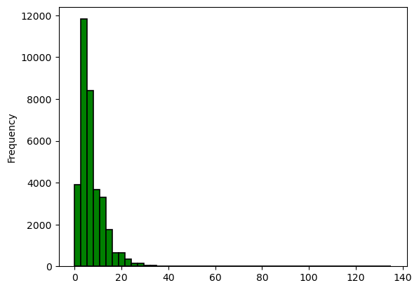
data = data[data.Evolution_SAU != 'N/A - résultat non disponible']
data = data[data.Evolution_SAU != 'N/A - division par 0']
data = data[data.Conso_ENAF != 'N/A - division par 0']
data = data[data.Conso_ENAF != 'N/A - résultat non disponible']
data = data[data.Urbain != 'N/A - division par 0']
data = data[data.Urbain != 'N/A - résultat non disponible']
data = data[data.Superficie != 'N/A - division par 0']
data = data[data.Superficie != 'N/A - résultat non disponible']
data = data[data.Population != 'N/A - division par 0']
data = data[data.Population != 'N/A - résultat non disponible']
#plot the mean of the columns 3 for each decile of the column 2
data.Cat = data.Cat.astype(float)
data.Evolution_SAU = data.Evolution_SAU.astype(float)
data.Urbain = data.Urbain.astype(float)
data['Zone humide'] = data['Zone humide'].astype(float)
data.Forets = data.Forets.astype(float)
data.Agri = data.Agri.astype(float)
data.Superficie = data.Superficie.astype(float)
data.Conso_ENAF = data.Conso_ENAF.astype(float)
data.Population = data.Population.astype(float)
data['Conso_ENAF_sup'] = data['Conso_ENAF']/data['Superficie']
data['densite'] = data['Population']/data['Superficie']
data['Cat_sup'] = data['Cat']/data['Superficie']
data['Cat_pop'] = data['Cat']/data['Population']
deciles = pd.qcut(data.loc[:,'Cat_sup'], 10, labels=False)
data['decile'] = deciles#group by decile and calculate the mean of column 3
data_plot = data[['decile', 'Superficie', 'Population', 'Conso_ENAF', 'Cat', 'Cat_sup', 'Cat_pop', 'Conso_ENAF_sup', 'densite']]
data_plot = data_plot.groupby('decile').mean()data_plot.plot(y='Population', kind='bar', color='blue', edgecolor='black', linewidth=1.2)
plt.ylabel('Population')
plt.xlabel('Decile of Natural Hazard Declared/km2')Text(0.5, 0, 'Decile of Natural Hazard Declared/km2')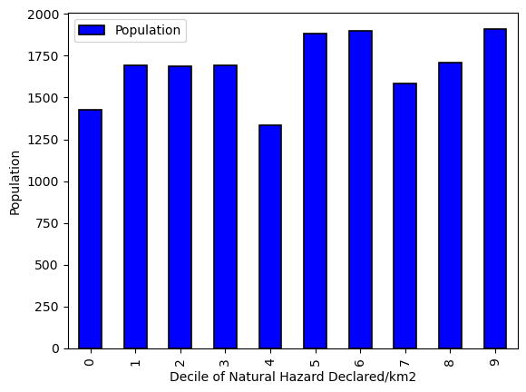
#same for column 3
data_plot.plot(y='Conso_ENAF_sup', kind='bar', color='red', edgecolor='black', linewidth=1.2)
plt.ylabel('Consumption of wildland per km2')
plt.xlabel('Decile of Natural Hazard Declared per km2')Text(0.5, 0, 'Decile of Natural Hazard Declared per km2')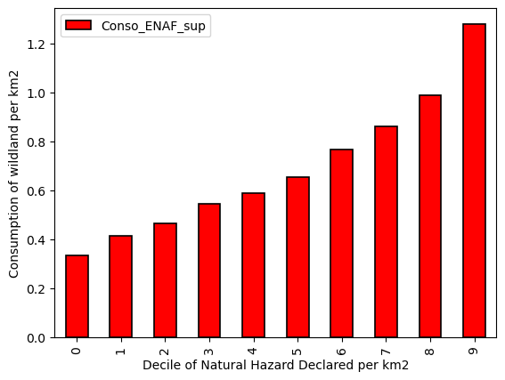
df_conso = pd.read_csv('data/conso2009-2023-resultats-com.csv', sep=';')C:\Users\colin\AppData\Local\Temp\ipykernel_22796\2438125833.py:1: DtypeWarning: Columns (0,4,6) have mixed types. Specify dtype option on import or set low_memory=False.
df_conso = pd.read_csv('data/conso2009-2023-resultats-com.csv', sep=';')cols = ['artcom0923','art09hab23', 'idcom']
#merge data on Code and idcom
data['Code'] = data['Code'].astype(str)
df_conso['artcom0923'] = df_conso['artcom0923'].astype(str)
df_conso = df_conso[cols]#the number with only 4 digits need to be completed with 0 at the beginning
df_conso['idcom'] = df_conso['idcom'].apply(lambda x: '0'+str(x) if len(str(x)) == 4 else str(x) )df = data.merge(df_conso, left_on='Code', right_on='idcom')#check the coevolution of Conso_ENAF/Superficie and art09hab23
df['artcom0923'] = df['artcom0923'].astype(float)
df['art09hab23'] = df['art09hab23'].astype(float)
df['art09hab23'] = df['art09hab23']/df['Superficie']/1e4df.plot(x='Conso_ENAF_sup', y='artcom0923', kind='scatter', color='blue', edgecolor='black', linewidth=1.2)
plt.ylabel('Population growth rate')Text(0, 0.5, 'Population growth rate')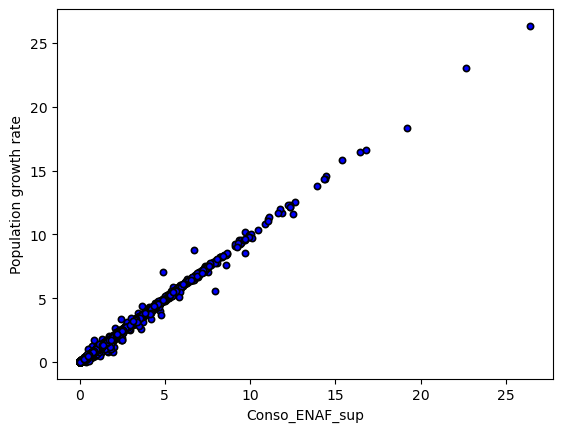
df.plot(x='Cat', y='artcom0923', kind='scatter', color='red', edgecolor='black', linewidth=1.2)
#add the linear regression
from sklearn.linear_model import LinearRegression
model = LinearRegression()
model.fit(df[['Cat_sup']], df['artcom0923'])
a = model.coef_
b = model.intercept_
plt.plot(df['Cat_sup'], a*df['Cat_sup']+b, color='black')
plt.ylabel('Proportion of the county that\nhas been impermeabilized since 2009 (%)')
plt.xlabel('Natural Hazard Declared')
#print in the title the slope
plt.title('The slope of the regression is '+str(round(a[0], 3)))
Text(0.5, 1.0, 'The slope of the regression is 0.3')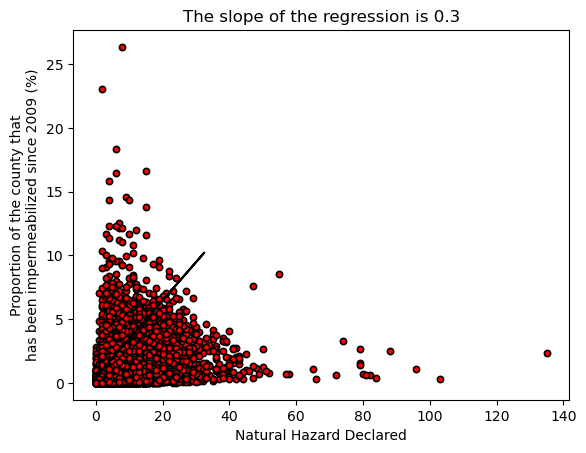
df.plot(x='Cat', y='art09hab23', kind='scatter', color='blue', edgecolor='black', linewidth=1.2)
#add the linear regression
model = LinearRegression()
model.fit(df[['Cat']], df['art09hab23'])
a = model.coef_
b = model.intercept_
plt.plot(df['Cat'], a*df['Cat']+b, color='black')
plt.ylabel('Proportion of the county that\nhas been impermeabilized for buildings since 2009 (in %)')
plt.xlabel('Natural Hazard Declared')
#print in the title the slope
plt.title('The slope of the regression is '+str(round(a[0], 3)))
plt.show()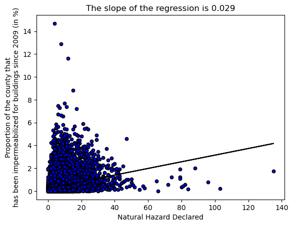
Climate Risks
shp = gpd.read_file('C:/Users/colin/Downloads/communes-20220101-shp/communes-20220101.shp')
data_new = pd.read_csv('data/indicesQ50_25021114242922763.txt', sep=';', comment='#', header=None)
data_new.columns = ['index', 'lat', 'lon', 'scenario', 'tasmax', 'day30', 'pr_cum', 'wf_risk', 'droughts_day', 'nan']
data_new = data_new.drop('nan', axis=1)shp = shp[shp.insee.isin(df['Code'])]
#map the data_new to each county in the shapefile based on the closest lat lon
from scipy.spatial import distance
def closest_node(node, nodes):
closest_index = distance.cdist([node], nodes).argmin()
return closest_index
shp_bis = shp.copy()
shp_bis['lat'] = shp_bis.geometry.centroid.y
shp_bis['lon'] = shp_bis.geometry.centroid.x
shp_bis['index'] = shp_bis.apply(lambda x: closest_node([x['lat'], x['lon']], data_new[['lat', 'lon']].values), axis=1)
C:\Users\colin\AppData\Local\Temp\ipykernel_47692\4556759.py:9: UserWarning: Geometry is in a geographic CRS. Results from 'centroid' are likely incorrect. Use 'GeoSeries.to_crs()' to re-project geometries to a projected CRS before this operation.
shp_bis['lat'] = shp_bis.geometry.centroid.y
C:\Users\colin\AppData\Local\Temp\ipykernel_47692\4556759.py:10: UserWarning: Geometry is in a geographic CRS. Results from 'centroid' are likely incorrect. Use 'GeoSeries.to_crs()' to re-project geometries to a projected CRS before this operation.
shp_bis['lon'] = shp_bis.geometry.centroid.xshp_bis['pr_cum'] = shp_bis['index'].apply(lambda x: data_new.loc[x, 'pr_cum'])
shp_bis['tasmax'] = shp_bis['index'].apply(lambda x: data_new.loc[x, 'tasmax'])
shp_bis['wf_risk'] = shp_bis['index'].apply(lambda x: data_new.loc[x, 'wf_risk'])
shp_bis['droughts_day'] = shp_bis['index'].apply(lambda x: data_new.loc[x, 'droughts_day'])
shp_bis['day30'] = shp_bis['index'].apply(lambda x: data_new.loc[x, 'day30'])df = df.merge(shp_bis[['insee', 'pr_cum', 'tasmax', 'wf_risk', 'droughts_day', 'day30']], left_on='Code', right_on='insee')#plot the quantiles of tasmax
import cartopy.crs as ccrs
import cartopy.feature as cfeature
fig,ax = plt.subplots(1,1, figsize=(10,10), subplot_kw={'projection': ccrs.PlateCarree()})
shp_bis.plot(column='tasmax', legend=True, cmap='RdBu_r', ax=ax, linewidth=1.2, transform=ccrs.PlateCarree(), legend_kwds={'orientation': 'horizontal', 'label': 'Temperature max'})
ax.set_extent([-5, 10, 41, 52], crs=ccrs.PlateCarree())
ax.set_title('Temperature max')Text(0.5, 1.0, 'Temperature max')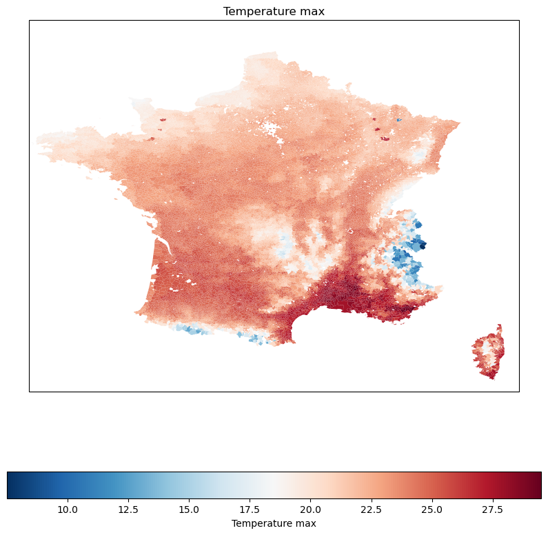
#plot the quantiles of tasmax
import cartopy.crs as ccrs
import cartopy.feature as cfeature
fig,ax = plt.subplots(1,1, figsize=(10,10), subplot_kw={'projection': ccrs.PlateCarree()})
shp_bis.plot(column='day30', legend=True, cmap='RdBu_r', ax=ax, linewidth=1.2, transform=ccrs.PlateCarree(), legend_kwds={'orientation': 'horizontal', 'label': 'Days above 30°C'})
ax.set_extent([-5, 10, 41, 52], crs=ccrs.PlateCarree())
ax.set_title('Days above 30°C')Text(0.5, 1.0, 'Days above 30°C')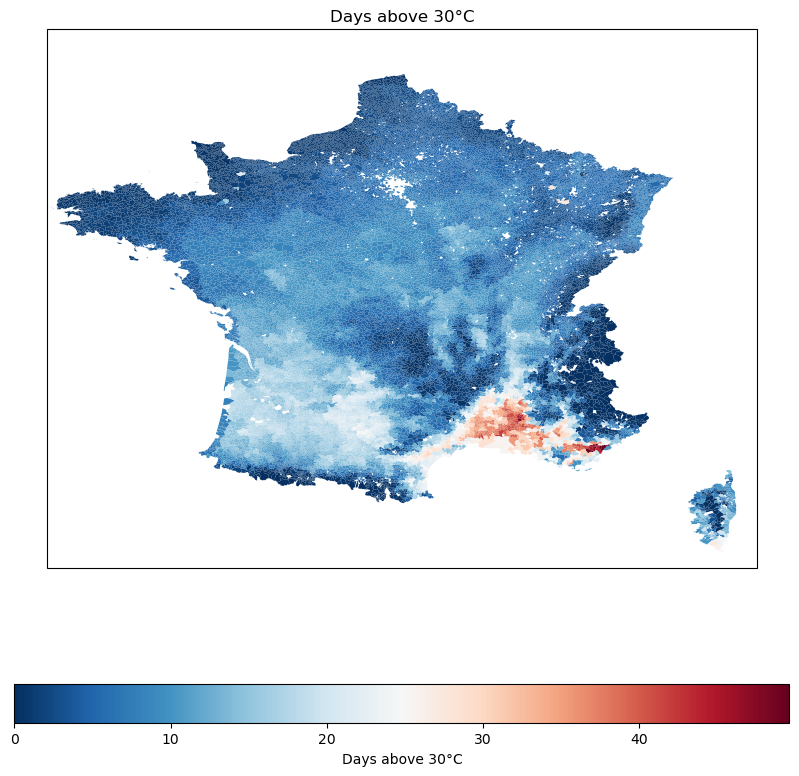
#plot the quantiles of tasmax
import cartopy.crs as ccrs
import cartopy.feature as cfeature
fig,ax = plt.subplots(1,1, figsize=(10,10), subplot_kw={'projection': ccrs.PlateCarree()})
shp_bis.plot(column='pr_cum', legend=True, cmap='RdBu_r', ax=ax, linewidth=1.2, transform=ccrs.PlateCarree(), legend_kwds={'orientation': 'horizontal', 'label': 'Intensity cumulated of extreme precipitation'})
ax.set_extent([-5, 10, 41, 52], crs=ccrs.PlateCarree())
ax.set_title('Extreme Precipitation')Text(0.5, 1.0, 'Extreme Precipitation')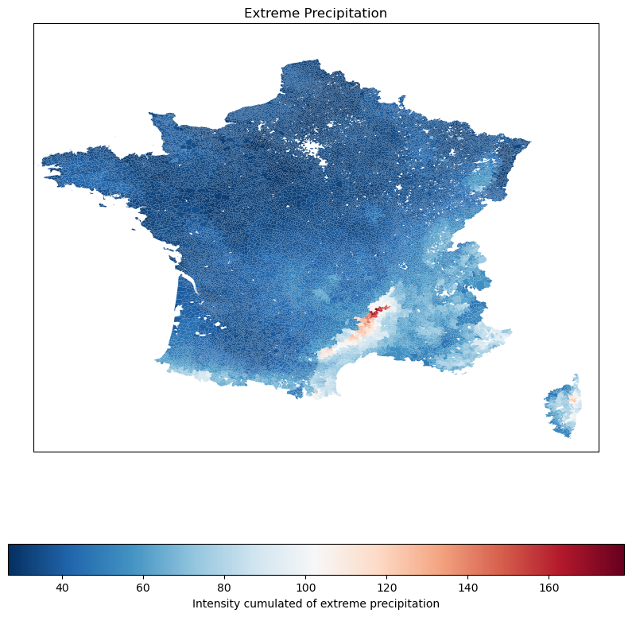
#plot the quantiles of tasmax
import cartopy.crs as ccrs
import cartopy.feature as cfeature
fig,ax = plt.subplots(1,1, figsize=(10,10), subplot_kw={'projection': ccrs.PlateCarree()})
shp_bis.plot(column='droughts_day', legend=True, cmap='RdBu_r', ax=ax, linewidth=1.2, transform=ccrs.PlateCarree(), legend_kwds={'orientation': 'horizontal', 'label': 'Droughts Day Annual Frequency'})
ax.set_extent([-5, 10, 41, 52], crs=ccrs.PlateCarree())
ax.set_title('Droughts Day Annual Frequency')Text(0.5, 1.0, 'Droughts Day Annual Frequency')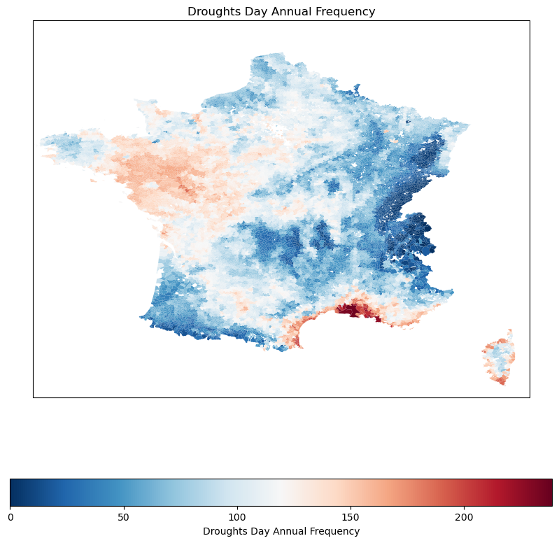
#plot the quantiles of tasmax
import cartopy.crs as ccrs
import cartopy.feature as cfeature
fig,ax = plt.subplots(1,1, figsize=(10,10), subplot_kw={'projection': ccrs.PlateCarree()})
shp_bis.plot(column='wf_risk', legend=True, cmap='RdBu_r', ax=ax, linewidth=1.2, transform=ccrs.PlateCarree(), legend_kwds={'orientation': 'horizontal', 'label': 'Wildfire Risk'})
ax.set_extent([-5, 10, 41, 52], crs=ccrs.PlateCarree())
ax.set_title('Wildfire Risk')Text(0.5, 1.0, 'Wildfire Risk')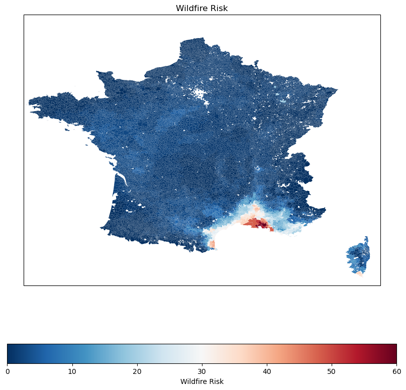
scatter = df.plot.scatter(x='Cat_pop', y='Cat_sup', c='pr_cum', colormap='viridis', logy=True, logx=True)
plt.colorbar(scatter.collections[0], label='pr_cum (log scale)')
plt.xlabel('Cat_pop')
plt.ylabel('Cat_sup')
plt.title('Scatter plot of Cat_pop vs Cat_sup with pr_cum as color (log scale)')
plt.show()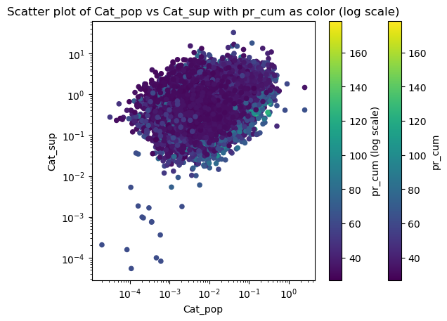
scatter = df.plot.scatter(x='art09hab23', y='droughts_day', colormap='viridis', logy=True, logx=True)
plt.colorbar(scatter.collections[0], label='Cat')
plt.xlabel('art09hab23')
plt.ylabel('pr_cum')c:\Users\colin\anaconda3\envs\xarray_env\Lib\site-packages\pandas\plotting\_matplotlib\core.py:1345: UserWarning: No data for colormapping provided via 'c'. Parameters 'cmap' will be ignored
scatter = ax.scatter(Text(0, 0.5, 'pr_cum')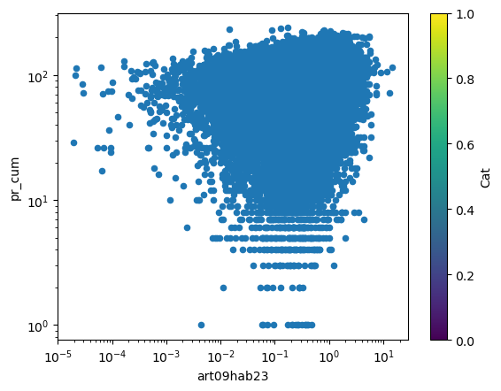
df['decile_tasmax'] = pd.qcut(df['tasmax'], 10, labels=False)
df_plot = df[['decile_tasmax', 'Conso_ENAF', 'Population', 'Superficie', 'Cat', 'Cat_sup', 'Cat_pop', 'Conso_ENAF_sup', 'densite']]
df_plot = df_plot.groupby('decile_tasmax').mean()
df_plot.plot(y='Population', kind='bar', color='blue', edgecolor='black', linewidth=1.2)
plt.ylabel('Population')
plt.xlabel('Decile of tasmax')Text(0.5, 0, 'Decile of tasmax')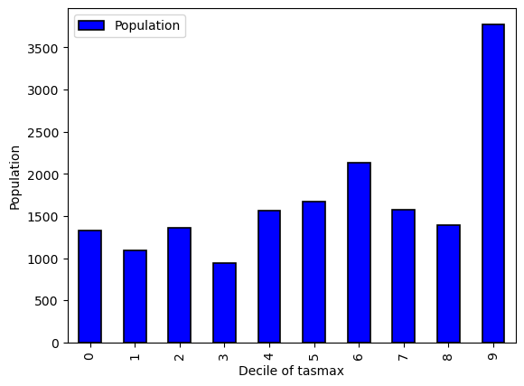
df_plot.plot(y='Conso_ENAF_sup', kind='bar', color='#f4978e', edgecolor='black', linewidth=1.2)
plt.ylabel('Consumption of wildland per km2')
plt.xlabel('Decile of Max Temperature in Summer')Text(0.5, 0, 'Decile of Max Temperature in Summer')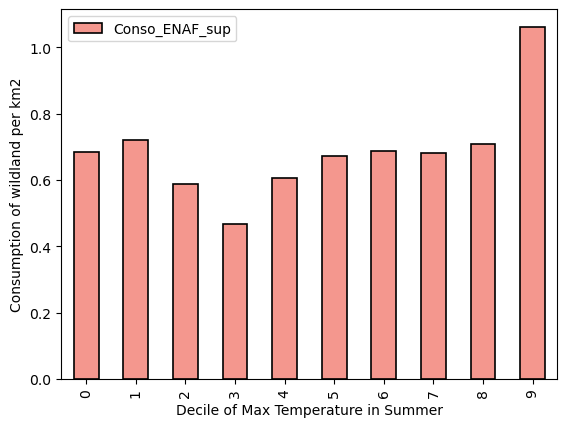
df_plot = df[['day30', 'Conso_ENAF', 'Population', 'Superficie', 'Cat', 'Cat_sup', 'Cat_pop', 'Conso_ENAF_sup', 'densite','art09hab23']]
df_plot['decile_day30'] = pd.qcut(df_plot['day30'], 10, labels=False)
df_plot = df_plot.groupby('decile_day30').mean()
df_plot.plot(y='Conso_ENAF_sup', kind='bar', color='#f4978e', edgecolor='black', linewidth=1.2)
plt.ylabel('Consumption of wildland per km2')
plt.xlabel('Days above 30°C')C:\Users\colin\AppData\Local\Temp\ipykernel_47692\1308895474.py:2: SettingWithCopyWarning:
A value is trying to be set on a copy of a slice from a DataFrame.
Try using .loc[row_indexer,col_indexer] = value instead
See the caveats in the documentation: https://pandas.pydata.org/pandas-docs/stable/user_guide/indexing.html#returning-a-view-versus-a-copy
df_plot['decile_day30'] = pd.qcut(df_plot['day30'], 10, labels=False)Text(0.5, 0, 'Days above 30°C')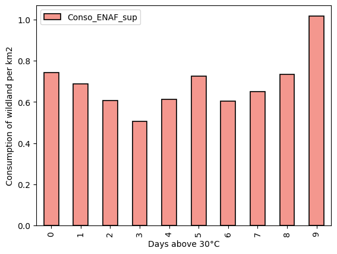
df_plot = df[['pr_cum', 'Conso_ENAF', 'Population', 'Superficie', 'Cat', 'Cat_sup', 'Cat_pop', 'Conso_ENAF_sup', 'densite']]
df_plot['decile_pr_cum'] = pd.qcut(df_plot['pr_cum'], 10, labels=False)
df_plot = df_plot.groupby('decile_pr_cum').mean()
df_plot.plot(y='Conso_ENAF_sup', kind='bar', color='#f4978e', edgecolor='black', linewidth=1.2)
plt.ylabel('Consumption of wildland per km2')
plt.xlabel('Decile of pr_cum')C:\Users\colin\AppData\Local\Temp\ipykernel_47692\2954949840.py:2: SettingWithCopyWarning:
A value is trying to be set on a copy of a slice from a DataFrame.
Try using .loc[row_indexer,col_indexer] = value instead
See the caveats in the documentation: https://pandas.pydata.org/pandas-docs/stable/user_guide/indexing.html#returning-a-view-versus-a-copy
df_plot['decile_pr_cum'] = pd.qcut(df_plot['pr_cum'], 10, labels=False)Text(0.5, 0, 'Decile of pr_cum')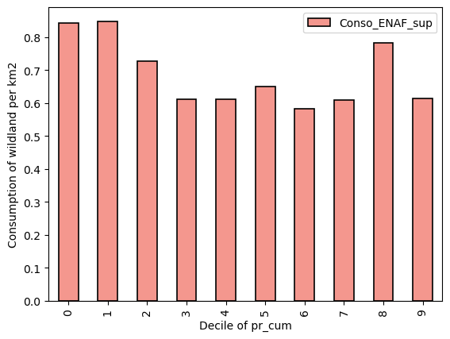
df_plot = df[['pr_cum', 'Conso_ENAF', 'Population', 'Superficie', 'Cat', 'Cat_sup', 'Cat_pop', 'Conso_ENAF_sup', 'densite', 'artcom0923', 'art09hab23']]
df_plot['decile_pr_cum'] = pd.qcut(df_plot['pr_cum'], 10, labels=False)
df_plot = df_plot.groupby('decile_pr_cum').mean()
df_plot.plot(y='artcom0923', kind='bar', color='#f4978e', edgecolor='black', linewidth=1.2)
plt.ylabel('Consumption of wildland per km2')
plt.xlabel('Decile of pr_cum')C:\Users\colin\AppData\Local\Temp\ipykernel_47692\4272091076.py:2: SettingWithCopyWarning:
A value is trying to be set on a copy of a slice from a DataFrame.
Try using .loc[row_indexer,col_indexer] = value instead
See the caveats in the documentation: https://pandas.pydata.org/pandas-docs/stable/user_guide/indexing.html#returning-a-view-versus-a-copy
df_plot['decile_pr_cum'] = pd.qcut(df_plot['pr_cum'], 10, labels=False)Text(0.5, 0, 'Decile of pr_cum')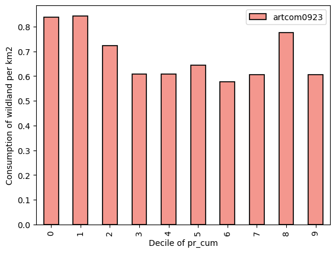
df.columnsIndex(['Code', 'Libellé', 'Cat', 'Evolution_SAU', 'Urbain', 'Zone humide',
'Forets', 'Agri', 'Superficie', 'Conso_ENAF', 'Population',
'Conso_ENAF_sup', 'densite', 'Cat_sup', 'Cat_pop', 'decile',
'artcom0923', 'art09hab23', 'idcom', 'insee', 'pr_cum', 'tasmax',
'wf_risk', 'droughts_day', 'day30', 'decile_tasmax'],
dtype='object')df_plot = df[['droughts_day', 'Population', 'Superficie', 'Cat', 'Cat_sup', 'Cat_pop', 'Conso_ENAF_sup', 'densite']]
df_plot['decile_droughts'] = pd.qcut(df_plot['droughts_day'], 10, labels=False, duplicates='drop')
df_plot = df_plot.groupby('decile_droughts').mean()
df_plot.plot(y='Conso_ENAF_sup', kind='bar', color='#f4978e', edgecolor='black', linewidth=1.2)
plt.ylabel('Consumption of wildland per km2')
plt.xlabel('Decile of droughts frequency')C:\Users\colin\AppData\Local\Temp\ipykernel_47692\2111096437.py:2: SettingWithCopyWarning:
A value is trying to be set on a copy of a slice from a DataFrame.
Try using .loc[row_indexer,col_indexer] = value instead
See the caveats in the documentation: https://pandas.pydata.org/pandas-docs/stable/user_guide/indexing.html#returning-a-view-versus-a-copy
df_plot['decile_droughts'] = pd.qcut(df_plot['droughts_day'], 10, labels=False, duplicates='drop')Text(0.5, 0, 'Decile of droughts frequency')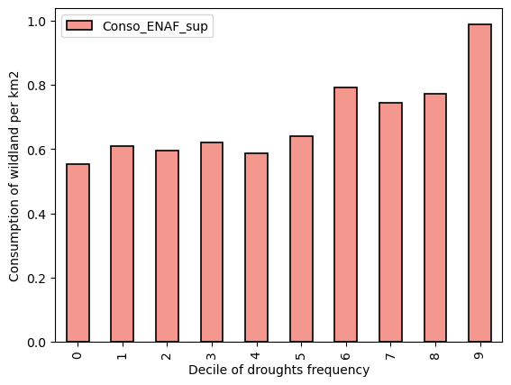
df.wf_risk.plot.hist(bins=50, color='green', edgecolor='black', linewidth=1.2)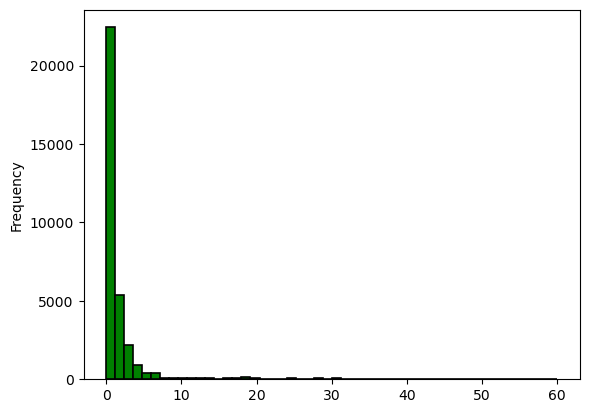
df_plot| droughts_day | Population | Superficie | Cat | Cat_sup | Cat_pop | Conso_ENAF_sup | densite | |
|---|---|---|---|---|---|---|---|---|
| decile_droughts | ||||||||
| 0 | 21.854380 | 1142.313507 | 41.181863 | 5.702315 | 0.682621 | 0.023434 | 0.552001 | 86.341940 |
| 1 | 47.941283 | 1421.657082 | 15.879540 | 6.869855 | 0.782779 | 0.029203 | 0.608815 | 101.057606 |
| 2 | 62.967780 | 1088.751492 | 14.521569 | 6.722554 | 0.817142 | 0.027592 | 0.594098 | 86.037883 |
| 3 | 74.967033 | 1290.820818 | 14.085592 | 7.018315 | 0.813442 | 0.025119 | 0.619597 | 114.340819 |
| 4 | 85.828974 | 1280.581546 | 14.203761 | 6.734352 | 0.754544 | 0.021732 | 0.585549 | 107.765678 |
| 5 | 96.663766 | 1706.215549 | 14.449677 | 6.879035 | 0.721286 | 0.021871 | 0.641218 | 126.267525 |
| 6 | 106.101213 | 1443.205682 | 14.214176 | 7.813258 | 0.859847 | 0.022173 | 0.790664 | 120.758190 |
| 7 | 114.790736 | 1521.834055 | 15.496301 | 7.775741 | 0.760823 | 0.020534 | 0.745247 | 116.817669 |
| 8 | 125.497629 | 1994.981624 | 17.530083 | 8.567872 | 0.752788 | 0.019281 | 0.771332 | 133.848530 |
| 9 | 148.115468 | 3988.169188 | 24.455171 | 9.791911 | 0.682384 | 0.013172 | 0.989139 | 154.069842 |
df_plot = df[['wf_risk', 'Population', 'Superficie', 'Cat', 'Cat_sup', 'Cat_pop', 'Conso_ENAF_sup', 'densite']]
df_plot['decile_wf'] = pd.qcut(df_plot['wf_risk'], 10, labels=False, duplicates='drop')
df_plot = df_plot.groupby('decile_wf').mean()
df_plot.plot(y='Conso_ENAF_sup', kind='bar', color='#f4978e', edgecolor='black', linewidth=1.2)
plt.ylabel('Consumption of wildland per km2')
plt.xlabel('Wildfire Risk')C:\Users\colin\AppData\Local\Temp\ipykernel_47692\3421599317.py:2: SettingWithCopyWarning:
A value is trying to be set on a copy of a slice from a DataFrame.
Try using .loc[row_indexer,col_indexer] = value instead
See the caveats in the documentation: https://pandas.pydata.org/pandas-docs/stable/user_guide/indexing.html#returning-a-view-versus-a-copy
df_plot['decile_wf'] = pd.qcut(df_plot['wf_risk'], 10, labels=False, duplicates='drop')Text(0.5, 0, 'Wildfire Risk')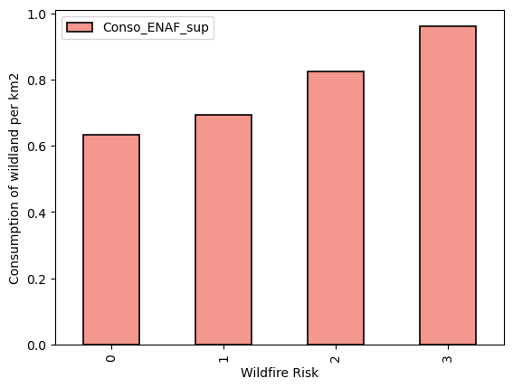
Cat Nat and Climate Risks
catnat_gaspar = pd.read_csv('data/catnat_gaspar.csv', sep=';')plt.figure(figsize=(10, 6))
plt.bar(catnat_gaspar.lib_risque_jo.value_counts().index, catnat_gaspar.lib_risque_jo.value_counts())
plt.yscale('log')
plt.xticks(rotation=90)
plt.ylabel('Count (log scale)')
plt.xlabel('Risk Type')
plt.title('Repartition of lib_risque_jo')
plt.show()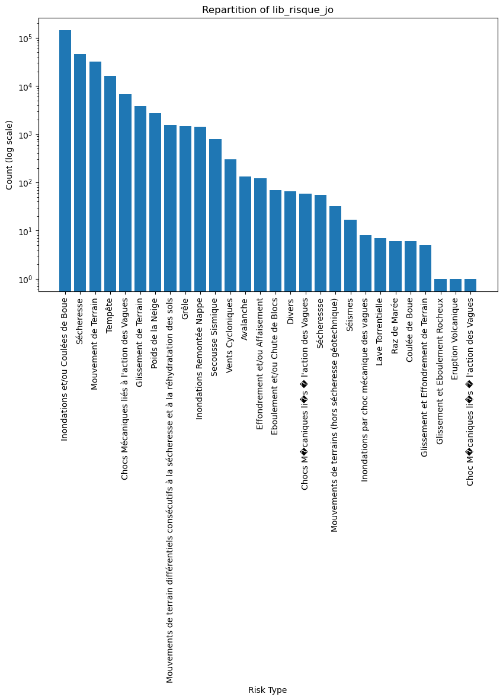
#show evolution of the declaration of natural hazard
catnat_gaspar['dat_deb'] = pd.to_datetime(catnat_gaspar['dat_deb'])
catnat_gaspar['year'] = catnat_gaspar['dat_deb'].dt.year
#line plot
catnat_gaspar['year'].value_counts().sort_index().plot(kind='bar', color='blue', linewidth=1.2)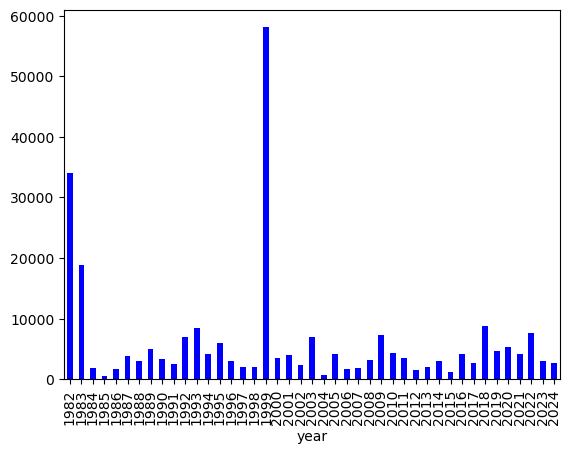
#now merge the shapefile with the number of natural hazard declared
gaspar_agg = catnat_gaspar.groupby('cod_commune').count().reset_index()
gaspar_agg = gaspar_agg[['cod_commune', 'lib_risque_jo']]
gaspar_agg.sort_values(by='lib_risque_jo', ascending=False, inplace=True)
gaspar_agg| cod_commune | lib_risque_jo | |
|---|---|---|
| 1849 | 06088 | 138 |
| 17394 | 49261 | 103 |
| 4237 | 13055 | 96 |
| 1788 | 06027 | 89 |
| 17336 | 49125 | 84 |
| ... | ... | ... |
| 6549 | 21097 | 1 |
| 6562 | 21113 | 1 |
| 33804 | 89288 | 1 |
| 6565 | 21118 | 1 |
| 34699 | 97617 | 1 |
34700 rows × 2 columns
gaspar_agg[gaspar_agg.cod_commune == '91345']| cod_commune | lib_risque_jo | |
|---|---|---|
| 34172 | 91345 | 23 |
shp_bis = gpd.read_file('C:/Users/colin/Downloads/georef-france-commune/georef-france-commune-millesime.shp')shp_bis['bv2022_code'] = shp_bis['bv2022_code'].apply(lambda x: x[2:-2] if x is not None else None)# shp_bis['insee'] = shp_bis['insee'].astype(str)
gaspar_agg['cod_commune'] = gaspar_agg['cod_commune'].astype(str)
shp_bis = shp_bis.merge(gaspar_agg, left_on='bv2022_code', right_on='cod_commune', how='left')
# shp_bis['lib_risque_jo'] = shp_bis['lib_risque_jo'].fillna(0)shp_bis.shape, shp.shape((33304, 7), (33304, 5))fig,ax = plt.subplots(1,1, figsize=(10,10), subplot_kw={'projection': ccrs.PlateCarree()})
shp_bis.plot(column='lib_risque_jo', legend=True, cmap='Reds', ax=ax, linewidth=1.2, transform=ccrs.PlateCarree(), legend_kwds={'orientation': 'horizontal', 'label': 'Natural Hazard declared'})
ax.set_extent([-5, 10, 41, 52], crs=ccrs.PlateCarree())
ax.set_title('Natural Hazard declared')
# lat,lon = shp[shp.insee == '18033'].geometry.centroid.y, shp[shp.insee == '18033'].geometry.centroid.x
#make a cross on the county 18033
# plt.scatter(lon, lat, marker='x', color='red')C:\Users\colin\AppData\Local\Temp\ipykernel_47692\2475855861.py:6: UserWarning: Geometry is in a geographic CRS. Results from 'centroid' are likely incorrect. Use 'GeoSeries.to_crs()' to re-project geometries to a projected CRS before this operation.
lat,lon = shp[shp.insee == '18033'].geometry.centroid.y, shp[shp.insee == '18033'].geometry.centroid.x
C:\Users\colin\AppData\Local\Temp\ipykernel_47692\2475855861.py:6: UserWarning: Geometry is in a geographic CRS. Results from 'centroid' are likely incorrect. Use 'GeoSeries.to_crs()' to re-project geometries to a projected CRS before this operation.
lat,lon = shp[shp.insee == '18033'].geometry.centroid.y, shp[shp.insee == '18033'].geometry.centroid.x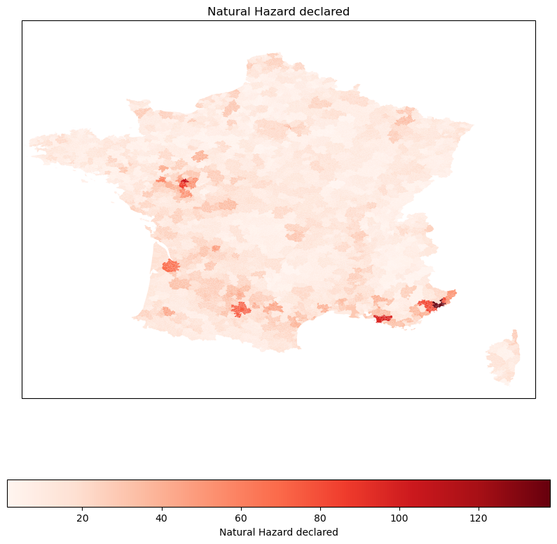
#!/usr/bin/env python
# -*- coding: utf-8 -*-
import pandas as pd
import statsmodels.api as sm
import statsmodels.formula.api as smf
import matplotlib.pyplot as plt
def run_regression(df):
"""
Run an OLS regression to estimate the influence of urbanization on the number
of catnat per km2 while controlling for density, longitude, latitude, population,
and median income.
You can add further controls if available in your dataset.
"""
# Define the regression formula.
# Note: Change the variable names if your dataset uses different names.
# formula = ("catnat_km2 ~ urbanization + density + longitude + latitude "
# "+ population + median_income")
formula = ("catnat_km2 ~ urbanization + density + longitude + latitude ")
# Fit the OLS model.
model = smf.ols(formula=formula, data=df).fit(cov_type='HC3') # robust standard errors
return model
def plot_results(df, model):
"""
Optional: Create a scatter plot of the relationship between urbanization and
catnat_km2. This is just one visualization; further diagnostic plots can be added.
"""
plt.figure(figsize=(8, 6))
plt.scatter(df['urbanization'], df['catnat_km2'], alpha=0.5, label='Data')
# To visualize the fitted relationship, we compute predicted values by varying urbanization.
urban_range = pd.DataFrame({'urbanization': sorted(df['urbanization'].unique())})
# Use average values for the other controls.
avg_values = {
'density': df['density'].mean(),
'longitude': df['longitude'].mean(),
'latitude': df['latitude'].mean(),
#'population': df['population'].mean(),
# 'median_income': df['median_income'].mean()
}
for var, value in avg_values.items():
urban_range[var] = value
urban_range['predicted_catnat'] = model.predict(urban_range)
plt.plot(urban_range['urbanization'], urban_range['predicted_catnat'], color='red', label='Fitted line')
plt.xlabel('Urbanization')
plt.ylabel('Catastrophic Events per km² (catnat_km2)')
plt.title('Influence of Urbanization on Catastrophic Events')
plt.legend()
plt.show()
data = pd.read_csv('data/data(4).csv', sep=';')
data.columns = data.iloc[1]
# Drop the first two rows and reset the index.
data = data.drop([0, 1]).reset_index(drop=True)
# Rename the columns for easier access.
data.columns = ['Code', 'Libellé', 'Cat', 'Evolution_SAU', 'Urbain', 'Zone humide',
'Forets', 'Agri', 'Superficie', 'Conso_ENAF', 'Population']
data = data[data.Evolution_SAU != 'N/A - résultat non disponible']
data = data[data.Evolution_SAU != 'N/A - division par 0']
data = data[data.Conso_ENAF != 'N/A - division par 0']
data = data[data.Conso_ENAF != 'N/A - résultat non disponible']
data = data[data.Urbain != 'N/A - division par 0']
data = data[data.Urbain != 'N/A - résultat non disponible']
data = data[data.Superficie != 'N/A - division par 0']
data = data[data.Superficie != 'N/A - résultat non disponible']
data = data[data.Population != 'N/A - division par 0']
data = data[data.Population != 'N/A - résultat non disponible']
#plot the mean of the columns 3 for each decile of the column 2
data.Cat = data.Cat.astype(float)
data.Evolution_SAU = data.Evolution_SAU.astype(float)
data.Urbain = data.Urbain.astype(float)
data['Zone humide'] = data['Zone humide'].astype(float)
data.Forets = data.Forets.astype(float)
data.Agri = data.Agri.astype(float)
data.Superficie = data.Superficie.astype(float)
data.Conso_ENAF = data.Conso_ENAF.astype(float)
data.Population = data.Population.astype(float)
data['Conso_ENAF_sup'] = data['Conso_ENAF']/data['Superficie']
data['densite'] = data['Population']/data['Superficie']
data['Cat_sup'] = data['Cat']/data['Superficie']
data['Cat_pop'] = data['Cat']/data['Population']df = data[['Cat_sup', 'Conso_ENAF_sup', 'Population', 'Superficie', 'Cat', 'densite', 'Urbain', 'Code', 'Libellé']]
df = df[~ df.Code.str.startswith('97')]
df = df[~ df.Code.str.startswith('96')]
shp_bis['lat'] = shp_bis.geometry.centroid.y
shp_bis['lon'] = shp_bis.geometry.centroid.x
df = df.merge(shp_bis[['bv2022_code', 'lat', 'lon']], left_on='Code', right_on='bv2022_code')C:\Users\colin\AppData\Local\Temp\ipykernel_19736\2542977576.py:5: UserWarning: Geometry is in a geographic CRS. Results from 'centroid' are likely incorrect. Use 'GeoSeries.to_crs()' to re-project geometries to a projected CRS before this operation.
shp_bis['lat'] = shp_bis.geometry.centroid.y
C:\Users\colin\AppData\Local\Temp\ipykernel_19736\2542977576.py:6: UserWarning: Geometry is in a geographic CRS. Results from 'centroid' are likely incorrect. Use 'GeoSeries.to_crs()' to re-project geometries to a projected CRS before this operation.
shp_bis['lon'] = shp_bis.geometry.centroid.xdf['catnat_km2'] = df['Cat_sup']
df['urbanization'] = df['Conso_ENAF_sup']
df['density'] = df['densite']
df['longitude'] = df['lon']
df['latitude'] = df['lat']
df['population'] = df['Population']model = run_regression(df)
plot_results(df, model)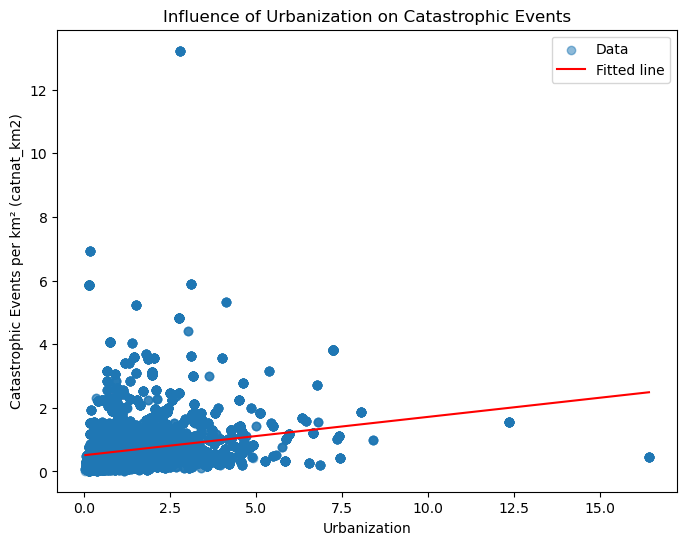
#show the coeff and the p-value
model.summary()| Dep. Variable: | catnat_km2 | R-squared: | 0.092 |
| Model: | OLS | Adj. R-squared: | 0.092 |
| Method: | Least Squares | F-statistic: | 500.0 |
| Date: | Mon, 17 Feb 2025 | Prob (F-statistic): | 0.00 |
| Time: | 15:25:31 | Log-Likelihood: | -33315. |
| No. Observations: | 33170 | AIC: | 6.664e+04 |
| Df Residuals: | 33165 | BIC: | 6.668e+04 |
| Df Model: | 4 | ||
| Covariance Type: | HC3 |
| coef | std err | z | P>|z| | [0.025 | 0.975] | |
| Intercept | 0.6020 | 0.087 | 6.900 | 0.000 | 0.431 | 0.773 |
| urbanization | 0.1204 | 0.005 | 25.779 | 0.000 | 0.111 | 0.130 |
| density | 0.0001 | 3.63e-06 | 28.677 | 0.000 | 9.69e-05 | 0.000 |
| longitude | -0.0059 | 0.001 | -4.562 | 0.000 | -0.009 | -0.003 |
| latitude | -0.0033 | 0.002 | -1.750 | 0.080 | -0.007 | 0.000 |
| Omnibus: | 35172.298 | Durbin-Watson: | 0.093 |
| Prob(Omnibus): | 0.000 | Jarque-Bera (JB): | 4719942.996 |
| Skew: | 5.138 | Prob(JB): | 0.00 |
| Kurtosis: | 60.528 | Cond. No. | 3.05e+04 |
Notes:
[1] Standard Errors are heteroscedasticity robust (HC3)
[2] The condition number is large, 3.05e+04. This might indicate that there are
strong multicollinearity or other numerical problems.
juvi_catnat = catnat_gaspar[catnat_gaspar.lib_commune == 'Juvignac']
# plot the evolution year by year and the type in a color
juvi_catnat['year'] = juvi_catnat['dat_deb'].dt.year
juvi_catnat['year'] = juvi_catnat['year'].astype(str)
juvi_catnat = juvi_catnat.sort_values(by='year')
plt.figure(figsize=(10, 6))
import seaborn as sns
# cumulated bar with different colors for each type
juvi_catnat_agg = juvi_catnat.groupby(['year', 'lib_risque_jo']).count().reset_index()
juvi_catnat_agg = juvi_catnat_agg[['year', 'lib_risque_jo', 'cod_commune']]
for year in range(1980, 2024):
if str(year) not in juvi_catnat_agg.year.unique():
juvi_catnat_agg = pd.concat([juvi_catnat_agg, pd.DataFrame({'year': [str(year)], 'lib_risque_jo': [np.nan], 'cod_commune': [0]})])
juvi_catnat_agg = juvi_catnat_agg.sort_values(by='year')
juvi_catnat_agg_pivot = juvi_catnat_agg.pivot(index='year', columns='lib_risque_jo', values='cod_commune').fillna(0)
juvi_catnat_agg_pivot = juvi_catnat_agg_pivot.loc[:, juvi_catnat_agg_pivot.columns.notna()]
juvi_catnat_agg_pivot.plot(kind='bar', stacked=True, figsize=(10, 6), colormap='viridis')
plt.xticks(rotation=60)
plt.gca().set_xticks(plt.gca().get_xticks()[::2])
# yticks just integers and remove None from the legend
plt.gca().yaxis.set_major_locator(plt.MaxNLocator(integer=True))
plt.legend(title='Natural Hazard Type')
plt.ylabel('Count')
plt.xlabel('Year')
plt.title('Evolution of Natural Hazard in Juvignac by Type')
plt.show()C:\Users\colin\AppData\Local\Temp\ipykernel_22796\3272823871.py:3: SettingWithCopyWarning:
A value is trying to be set on a copy of a slice from a DataFrame.
Try using .loc[row_indexer,col_indexer] = value instead
See the caveats in the documentation: https://pandas.pydata.org/pandas-docs/stable/user_guide/indexing.html#returning-a-view-versus-a-copy
juvi_catnat['year'] = juvi_catnat['dat_deb'].dt.year
C:\Users\colin\AppData\Local\Temp\ipykernel_22796\3272823871.py:4: SettingWithCopyWarning:
A value is trying to be set on a copy of a slice from a DataFrame.
Try using .loc[row_indexer,col_indexer] = value instead
See the caveats in the documentation: https://pandas.pydata.org/pandas-docs/stable/user_guide/indexing.html#returning-a-view-versus-a-copy
juvi_catnat['year'] = juvi_catnat['year'].astype(str)<Figure size 1000x600 with 0 Axes>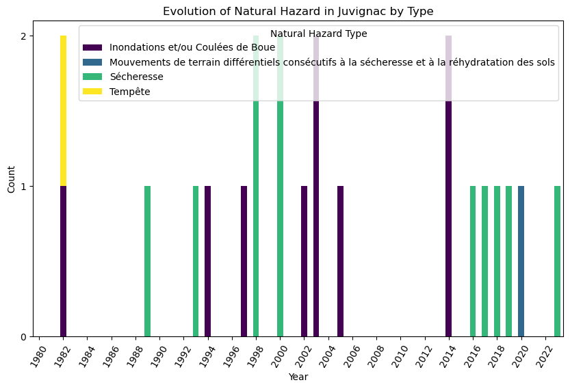
juvi_catnat = catnat_gaspar[catnat_gaspar.lib_commune == 'Rouffiac-Tolosan']
# plot the evolution year by year and the type in a color
juvi_catnat['year'] = juvi_catnat['dat_deb'].dt.year
juvi_catnat['year'] = juvi_catnat['year'].astype(str)
juvi_catnat = juvi_catnat.sort_values(by='year')
plt.figure(figsize=(10, 6))
import seaborn as sns
# cumulated bar with different colors for each type
juvi_catnat_agg = juvi_catnat.groupby(['year', 'lib_risque_jo']).count().reset_index()
juvi_catnat_agg = juvi_catnat_agg[['year', 'lib_risque_jo', 'cod_commune']]
for year in range(1980, 2024):
if str(year) not in juvi_catnat_agg.year.unique():
juvi_catnat_agg = pd.concat([juvi_catnat_agg, pd.DataFrame({'year': [str(year)], 'lib_risque_jo': [np.nan], 'cod_commune': [0]})])
juvi_catnat_agg = juvi_catnat_agg.sort_values(by='year')
juvi_catnat_agg_pivot = juvi_catnat_agg.pivot(index='year', columns='lib_risque_jo', values='cod_commune').fillna(0)
juvi_catnat_agg_pivot = juvi_catnat_agg_pivot.loc[:, juvi_catnat_agg_pivot.columns.notna()]
juvi_catnat_agg_pivot.plot(kind='bar', stacked=True, figsize=(10, 6), colormap='viridis')
plt.xticks(rotation=60)
plt.gca().set_xticks(plt.gca().get_xticks()[::2])
# yticks just integers and remove None from the legend
plt.gca().yaxis.set_major_locator(plt.MaxNLocator(integer=True))
plt.legend(title='Natural Hazard Type')
plt.ylabel('Count')
plt.xlabel('Year')
plt.title('Evolution of Natural Hazard in Juvignac by Type')
plt.show()C:\Users\colin\AppData\Local\Temp\ipykernel_22796\431015068.py:3: SettingWithCopyWarning:
A value is trying to be set on a copy of a slice from a DataFrame.
Try using .loc[row_indexer,col_indexer] = value instead
See the caveats in the documentation: https://pandas.pydata.org/pandas-docs/stable/user_guide/indexing.html#returning-a-view-versus-a-copy
juvi_catnat['year'] = juvi_catnat['dat_deb'].dt.year
C:\Users\colin\AppData\Local\Temp\ipykernel_22796\431015068.py:4: SettingWithCopyWarning:
A value is trying to be set on a copy of a slice from a DataFrame.
Try using .loc[row_indexer,col_indexer] = value instead
See the caveats in the documentation: https://pandas.pydata.org/pandas-docs/stable/user_guide/indexing.html#returning-a-view-versus-a-copy
juvi_catnat['year'] = juvi_catnat['year'].astype(str)<Figure size 1000x600 with 0 Axes>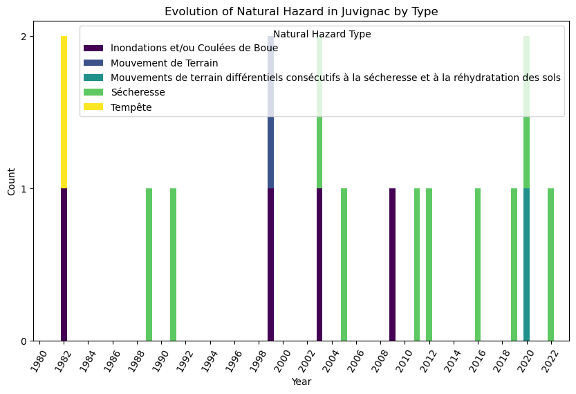
shp_bis = shp_bis.merge(df[['Code', 'artcom0923', 'art09hab23']], left_on='bv2022_code', right_on='Code', how='left')#plot artcom0923 by decile
shp_bis['artcom0923'] = shp_bis['artcom0923'].astype(float)
shp_bis['decile'] = pd.qcut(shp_bis['artcom0923'], 10, labels=False)
import cartopy.crs as ccrs
fig, ax = plt.subplots(1, 1, figsize=(10, 10), subplot_kw={'projection': ccrs.PlateCarree()})
shp_bis.plot(column='decile', legend=True, cmap='RdBu_r', linewidth=0.1, edgecolor='black', ax=ax)
ax.set_extent([-5, 10, 41, 52], crs=ccrs.PlateCarree())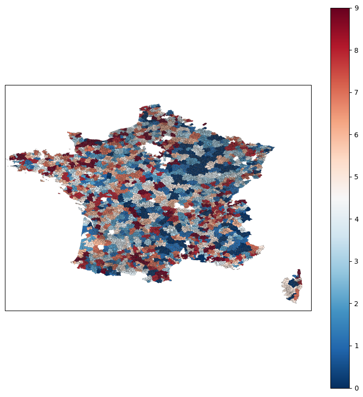
C:\Users\colin\AppData\Local\Temp\ipykernel_22796\2546517403.py:1: DtypeWarning: Columns (0,4,6) have mixed types. Specify dtype option on import or set low_memory=False.
df = pd.read_csv('data/conso2009-2023-resultats-com.csv', sep=';')df = pd.read_csv('data/conso2009-2023-resultats-com.csv', sep=';')
df['idcom'] = df['idcom'].astype(str)
df['idcom'] = df['idcom'].apply(lambda x: '0'+x if len(x) == 4 else x)
catnat_gaspar['cod_commune'] = catnat_gaspar['cod_commune'].astype(str)
df['surfcom2023'] = df['surfcom2023']/1e6
catnat_gaspar_plot = catnat_gaspar.groupby('cod_commune').count().reset_index()[['cod_commune', 'lib_risque_jo']]
catnat_gaspar_plot = catnat_gaspar_plot.merge(df[['idcom', 'artcom0923', 'art09hab23', 'surfcom2023']], left_on='cod_commune', right_on='idcom', how='left')
# catnat_gaspar_plot
catnat_gaspar_plot['decile'] = pd.qcut(catnat_gaspar_plot['artcom0923'], 10, labels=False)
catnat_gaspar_plot['catnat/km2'] = catnat_gaspar_plot['lib_risque_jo']/catnat_gaspar_plot['surfcom2023']
#plot the catnat/km2 by decile
fig, ax = plt.subplots(1, 1, figsize=(10, 10))
catnat_gaspar_plot[['decile', 'catnat/km2']].groupby('decile').mean().plot(kind='bar', ax=ax)
plt.ylabel('catnat/km2')
plt.xlabel('Decile of artcom0923')
C:\Users\colin\AppData\Local\Temp\ipykernel_22796\2364380686.py:1: DtypeWarning: Columns (0,4,6) have mixed types. Specify dtype option on import or set low_memory=False.
df = pd.read_csv('data/conso2009-2023-resultats-com.csv', sep=';')Text(0.5, 0, 'Decile of artcom0923')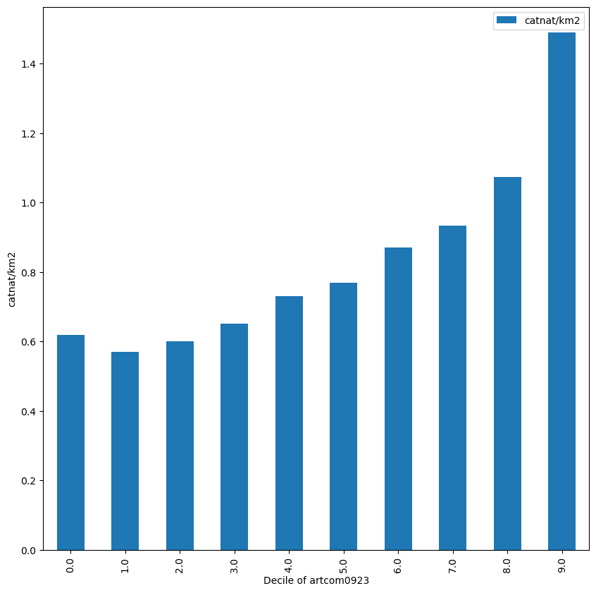
catnat_gaspar_plot = catnat_gaspar
catnat_gaspar_pre_2000 = catnat_gaspar_plot[catnat_gaspar_plot.dat_deb.dt.year < 2000]
catnat_gaspar_post_2000 = catnat_gaspar_plot[catnat_gaspar_plot.dat_deb.dt.year >= 2004]
catnat_gaspar_pre_2000 = catnat_gaspar_pre_2000.groupby('cod_commune').count().reset_index()[['cod_commune', 'lib_risque_jo']]
catnat_gaspar_pre_2000.columns = ['cod_commune', 'catnat_pre_2000']
catnat_gaspar_pre_2000 = catnat_gaspar_pre_2000.merge(df[['idcom', 'surfcom2023', 'artcom0923', 'art09hab23']], left_on='cod_commune', right_on='idcom', how='left')
# catnat_gaspar_pre_2000['surfcom2023'] = catnat_gaspar_pre_2000['surfcom2023']/1e6
catnat_gaspar_pre_2000['catnat_per_km2'] = catnat_gaspar_pre_2000['catnat_pre_2000'] / catnat_gaspar_pre_2000['surfcom2023']
catnat_gaspar_pre_2000['decile'] = pd.qcut(catnat_gaspar_pre_2000['artcom0923'], 10, labels=False)
catnat_gaspar_post_2000 = catnat_gaspar_post_2000.groupby('cod_commune').count().reset_index()[['cod_commune', 'lib_risque_jo']]
catnat_gaspar_post_2000.columns = ['cod_commune', 'catnat_post_2000']
catnat_gaspar_post_2000 = catnat_gaspar_post_2000.merge(df[['idcom', 'surfcom2023', 'artcom0923', 'art09hab23']], left_on='cod_commune', right_on='idcom', how='left')
# catnat_gaspar_post_2000['surfcom2023'] = catnat_gaspar_post_2000['surfcom2023']/1e6
catnat_gaspar_post_2000['catnat_per_km2'] = catnat_gaspar_post_2000['catnat_post_2000'] / catnat_gaspar_post_2000['surfcom2023']
catnat_gaspar_post_2000['decile'] = pd.qcut(catnat_gaspar_post_2000['artcom0923'], 10, labels=False)
fig, ax = plt.subplots(1, 1, figsize=(10, 10))
catnat_gaspar_pre_2000[['decile', 'catnat_per_km2']].groupby('decile').mean().plot(kind='bar', ax=ax, color='blue', position=0, width=0.4, label='Pre 2000')
catnat_gaspar_post_2000[['decile', 'catnat_per_km2']].groupby('decile').mean().plot(kind='bar', ax=ax, color='red', position=1, width=0.4, label='Post 2000')
plt.ylabel('catnat/km2')
plt.xlabel('Decile of artcom0923')
plt.legend()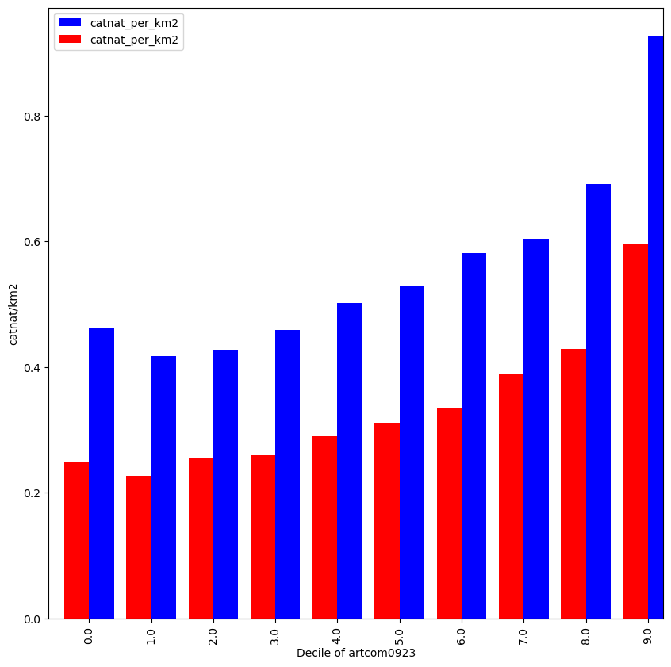
catnat_gaspar_pre_2000[['decile', 'catnat_per_km2']].groupby('decile').mean()| catnat_per_km2 | |
|---|---|
| decile | |
| 0.0 | 0.481235 |
| 1.0 | 0.434397 |
| 2.0 | 0.444468 |
| 3.0 | 0.478285 |
| 4.0 | 0.524602 |
| 5.0 | 0.553921 |
| 6.0 | 0.617194 |
| 7.0 | 0.644346 |
| 8.0 | 0.738500 |
| 9.0 | 0.991380 |
catnat_gaspar_post_2000[['decile', 'catnat_per_km2']].groupby('decile').mean()| catnat_per_km2 | |
|---|---|
| decile | |
| 0.0 | 0.248067 |
| 1.0 | 0.227285 |
| 2.0 | 0.255467 |
| 3.0 | 0.259824 |
| 4.0 | 0.290084 |
| 5.0 | 0.311844 |
| 6.0 | 0.333878 |
| 7.0 | 0.389875 |
| 8.0 | 0.428261 |
| 9.0 | 0.595746 |
len(catnat_gaspar.year.unique())43catnat_gaspar_pre_2000| cod_commune | catnat_pre_2000 | idcom | surfcom2023 | catnat_per_km2 | |
|---|---|---|---|---|---|
| 0 | 01001 | 1 | 01001 | 15.619934 | 0.064021 |
| 1 | 01002 | 1 | 01002 | 9.175479 | 0.108986 |
| 2 | 01004 | 4 | 01004 | 24.508833 | 0.163206 |
| 3 | 01005 | 2 | 01005 | 16.014205 | 0.124889 |
| 4 | 01006 | 1 | 01006 | 6.030856 | 0.165814 |
| ... | ... | ... | ... | ... | ... |
| 34199 | 97420 | 14 | 97420 | 57.826707 | 0.242103 |
| 34200 | 97421 | 13 | 97421 | 103.822134 | 0.125214 |
| 34201 | 97422 | 5 | 97422 | 181.023692 | 0.027621 |
| 34202 | 97423 | 4 | 97423 | 42.477582 | 0.094167 |
| 34203 | 97424 | 13 | 97424 | 84.395624 | 0.154036 |
34204 rows × 5 columns